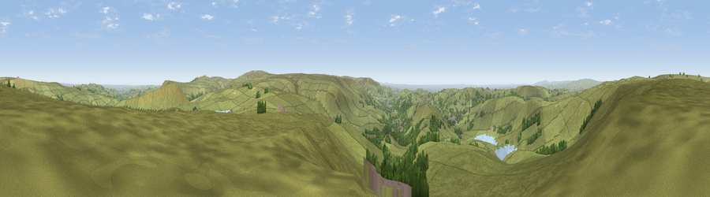

Viewpoint near Diggle
#9290 in England · top 10% of its area beats it · near DiggleWhere it is
The exact computed spot (SE 01275 10375). Click the marker for map links.
The view, rendered

A 360° render of this exact spot computed from the terrain model, tree cover and land cover — summer colours, afternoon light, calibrated against photographs of famous viewpoints. Real trees, hedges and buildings will differ in detail.
The panorama
Grey silhouette: terrain skyline in each direction (720 bearings, Earth curvature and refraction included). Dashed green: skyline with trees (+15 m) and buildings (+8 m) as obstacles. Blue strip: how far the ground is visible on each bearing.
Where the view opens
Wedge length = distance to the farthest visible ground on that bearing (vegetation-aware). Rings at 10, 25 and 50 km.
What fills the view
91% grassland · 6% woodland · 2% built-up ·
Angular shares of the visible panorama (visual magnitude), not map area. Landscape diversity 0.17 (0–1 Shannon).
Key numbers
More beautiful places nearby
The staircase of upgrades: each row has a higher view potential than everything closer. Driving times are estimates from straight-line distance, calibrated against real road routing — check an actual route before setting out.
| Place | Direction | Drive | Score |
|---|---|---|---|
| Viewpoint near Diggle | S · 4 km | ~9 min | 64.7 |
| Viewpoint near Uppermill | S · 5 km | ~10 min | 65.5 |
| Crompton Moor | W · 5 km | ~10 min | 67.5 |
| Viewpoint near Uppermill | S · 5 km | ~11 min | 67.9 |
| Viewpoint near Denshaw | W · 5 km | ~12 min | 69.3 |
| Viewpoint near Marsden | E · 6 km | ~13 min | 71.0 |
| Viewpoint near Shaw | WSW · 6 km | ~13 min | 72.9 |
| Viewpoint near Greenfield | S · 8 km | ~15 min | 76.0 |
53.58995, -1.98221 · source: screening · position refined by local search. Computed location — check access rights before visiting.